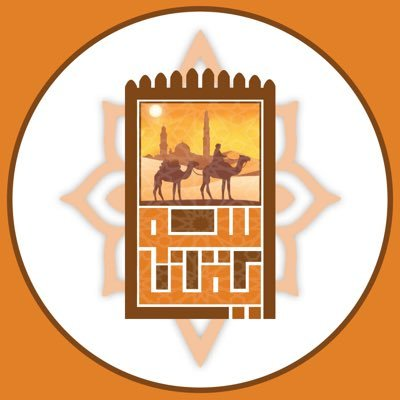
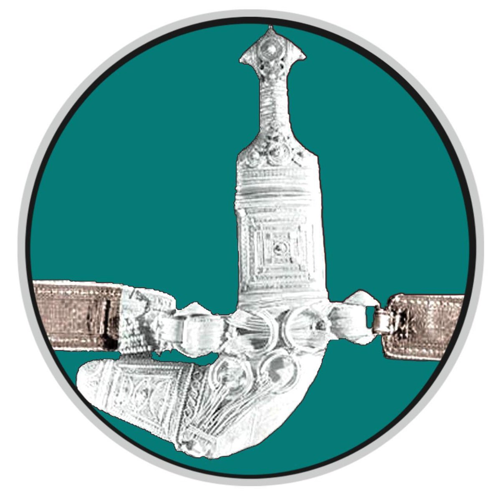
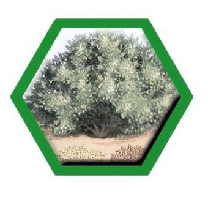
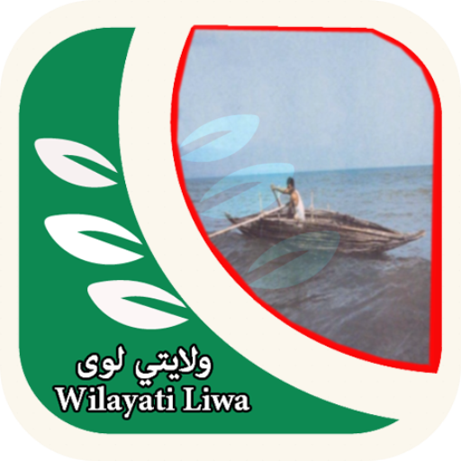
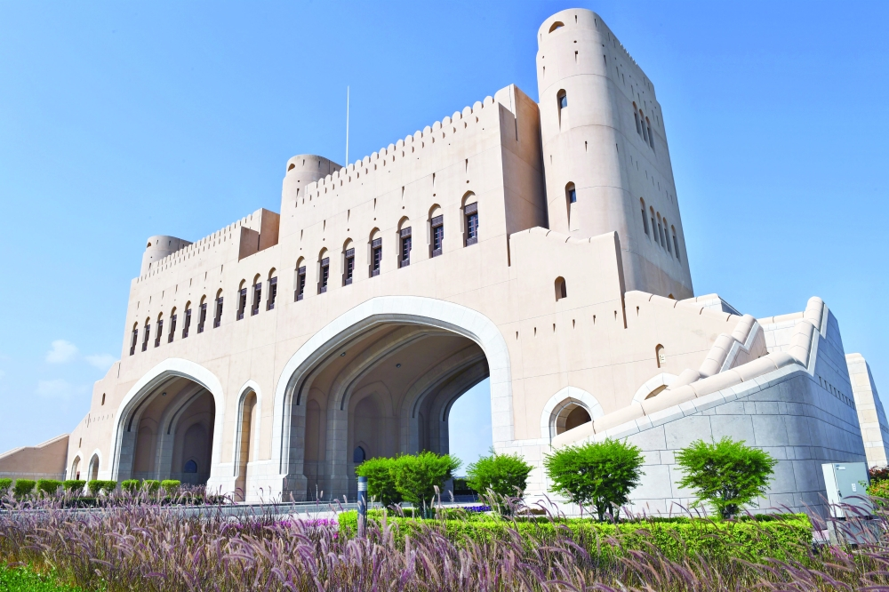

ولاية السويق إحدى ولايات محافظة شمال الباطنة .
تطل على بحر عُمان من جهة الشمال ،
وتحدها من الجنوب نيابة الحوقين بولاية الرستاق
، ومن الشرق ولاية المصنعة
، ومن الغرب ولاية الخابورة
. واتخذت هذه الولاية من الجمل شعاراً لها.
طبيعة ولاية السويق متنوعة بين الجبال والأودية والشواطئ والكثبان الرملية
، ومن أوديتها وادي اللسداني ووادي الجهاور ووادي الحيلين .
وتوجد فيها عيون مائية وأخوار، منها : عين الرحب ذات المياه الكبريتية التي تستعمل للاستشفاء من بعض الأمراض
، وعين صفاة العين ، وعين جبيجب وعين أم المسماة وخور ضيان البوسعيد.
ويوجد أيضا في الولاية 36 فلجاً. وفيها شجرة نادرة في عُمان تعرف باسم شجرة الديباج.
تشتهر ولاية السويق بمجموعة من المهن والحرف أبرزها :
التجارة وصناعة الفضيات والسعفيات والحلوى العُمانية ،
ويوجد بها أسواق كثيرة مثل : سوق البداية وسوق الثرمد . وتشتهر بالزراعة ،
وصيد الاسماك ، وتربية الماشية .
وتشتهر أيضا بفنون منها : الرزحة والقصابي والتشح شح والعيالة والدان دان والليوا والمالد والتغرود والديوان.

ولاية الخابورة، إحدى ولايات محافظة شمال الباطنة في منطقة الباطنة في
الجزء الشمالي من سلطنة عمان . بها العديد من القلاع الشهيرة منها على سبيل المثال: قلعة بو سعيد، بالإضافة إلى عدد من الحصون والأبراج،
عدد سكانها يقارب السبعين ألف نسمه. تحد ولاية الخابورة من الشمال
الغربي ولاية صحم ومن الجنوب الشرقي ولاية السويق. تشتهر ولاية الخابورة كونها مدينة هادئة تنتشر فيها مزارع النخيل.
ولاية الخابورة كسائر ولايات السلطنة لها الكثير من الشواهد والأحداث الضاربه في اعماق التاريخ ولايستطيع أحد انكاره ولها دوراً
فعالاً في تاريخ عمان الحافل بالامــجاد والبطولات، كما ان لها
تاريخ ملموس حتى وقتنا الحاضر الذي يدل على اهمية الولاية وعلى سبيل
المثال نذكر الممرين الرئيسيين اللذاني يربطا منطقة الظاهرة ككل بهذه الولاية العريقة : الممر الأول: بوادي الحواسنه الذي يبعد
عن مركز الولاية ب(70) كيلو متر والممر الثاني :بوادي شافان والمسمى {نجد الحديد} وهو يربط منطقة الظاهرة بهذه الولاية العريقة الذي من خلاله تنقل البضائع
المتبادله ما بين تجار ولايات الظاهرة وتجار ولاية الخابورة وولايات منطقة الباطنة الأخرى الذي يبعد عن مركز الولاية ب(77) كيلو متر.

رقها خليج عمان ، غربها منطقة الظاهرة ، شمالها ولاية صحار ،
وجنوبها ولاية الخابورة ، سكانها حوالي 75 ألف نسمة ، يدور في فلكها 82 قرية ومدينة .
وتجمع ولاية صحم بين الساحل والجبل ، بها مياه عذبة
دائمة الجريان ومناظر طبيعية ساحرة .
وهناك عدد كبير من الأفلاج التي لا يزال الأهالي يستخدمونها لري مزروعاتهم في مناطق عديدة مثل فلج وادي بني عمر ، الفليج ، الروضة ، المهاب وشيدة .
كما يجري بالولاية عدد من الأودية أهمها : وادي عاهن – المحموم – الصرمي – شافان وخور الملح .
أهم حصونها المنتشرة في جنباتها هو "حصن السوق" الذي كان مقراً للوالي وقاض الولاية ، وذلك قبل إنشاء المباني الحديثة التي إنتقلت إليها تلك المقار الحكومية .
تضم ولاية صحم موقعاً يتميز بخصوصية فريدة ،
وهو "سيح الطيبات" الذي أصبح أسمه مرتبطاً في الذاكرة العمانية
بالنهج الخاص الذي يطبع نهج جلالة السلطان قابوس المعظم وفلسفته في التعامل مع مواطنيه طوال سنوات عهده المضيئة بالخير والمتدفقة بالعطاء ،
هذا الموقع إرتبط بالجولات السنوية الميدانية
التفقدية التي يطوف بها موكب جلالة القائد مختلف ولايات السلطنة ومناطقها ، وهو الموقع الذي يمثل محطة بارزة من المحطات العديدة التي يقام
فيها المخيم السلطاني ومن حولة تنعقد جلسة البرلمان العماني المفتوح ،
حيث يجري حوار بلا حواجز ولا وسطاء بين جلالة القائد ومواطنيه يستمع جلالته
إلى همومهم ومشاكلهم متحسساً نبض حياتهم اليومية بادق تفاصيلها المعيشية
وموجهاً بالعمل على إيجاد الحلول الفورية لهذه المشاكل في ضوء الممكن والمتاح .
وتتعدد الصناعات والحرف والفنون التقليدية في ولاية صحم ، فهناك صناعات :
الخناجر – السيوف – الفضيات – المحازم – السعفيات – الأبواب – الأعمدة الخشبية – صناعة الحلوى . كذلك هناك من الحرف : الزراعة وتربية الماشية ،
صيد الأسماك ، الحدادة ، والنجارة ، ومن الفنون : الرزحة والعازي ، فنون البحر ، الهمبل ، الونه ، الفنون النسوية ، إلى جانب ذلك تشتهر صحم بسباقات الهجن والخيول
تعتبر صحار من أقدم المدن في سلطنة عمان،
حيث أنها كانت مركزا لاستخراج وتصدير النحاس إلى دول العالم القديم. كما أنها وبحكم موقعها على ساحل خليج عمان فإنها كانت تشكل ميناء
عالميا يربط بين الموانئ الخليجية وموانئ الهند والصين ،
ويعتقد الكثيرون بأنها منشأ أسطورة السندباد. وقد ذكرها العديد من المؤرخين والجغرافيين على مدى العصور وأشادوا بأهميتها في كتبهم.
كما أن عبد وجيفر ابني الجلندى (ملكا عمان في عهد الرسول صلى الله عليه وسلم) استقبلا رسوله إلى عمان عمرو بن العاص فيها.
عرفت صحار منذ القدم بنشاطها التجاري. وبحكم كونها مركزا إداريا لمنطقة شمال الباطنة
في العصر الحديث، فقد تم إنشاء أسواق متخصصة تخدم مختلف الشرائح من الزبائن، ومن بين هذه الأسواق سوق الخضروات والفواكه المركزي
وسوق الأسماك وسوق الحرفيين (المتخصص في السلع الحرفية) وسوق الجمعة (المتخصص ببيع الأعلاف والمنتوجات الزراعية). وفي الآونة الأخيرة
بدأت بعض محلات التسوق الكبرى في إنشاء أفرع لها بصحار. تمتاز صحار بالعديد من المميزات السياحية.
فعلى سبيل المثال تمتاز صحار بوجود الجبال الشاهقة والتي تشكل عامل جذب لهواة تسلق الجبال. كما يوجد بها العديد من الأودية سواء تلك التي تزخر بالمياه
على مدار السنة أو الأودية الموسمية. وبالإمكان رؤية العديد من العائلات والتجمعات سواء كان ذلك في وادي حيبي أو وادي عاهن
أو وادي الجزي. بالإضافة إلى الجبال والأودية فإن شواطئ صحار النظيفة تجذب العديد من السواح سواء من المواطنين أو الزوار.

واحدة من ولايات شمال الباطنة
وتضم عددا من القلاع والحصون والأبراج، أهمها قلعة لوى التي تتألف من ثلاث أبراج رئيسية تتمركز في أطراف السور المحيط بهذه القلعة،
وقلعة فزح التي يبلغ ارتفاعها مائة متر تقريبا. أما حصن أولاد يعرب فهو من الطين الأبيض ،
ويقع على شاطئ البحر في منطقة حرمول، كما ينتشر بالولاية وعلى قمم جبالها عدد من الأبراج.
وبها أيضا عدد من المساجد الأثرية، أهمها مسجد الإمام الربيع بن حبيب، وهو احد
علماء عمان الذي نشأ في قرية غضفان بالولاية. إلى جانب ذلك، هناك بعض المعالم السياحية التي تتمثل في عدد من العيون والأفلاج والكهوف، مثل
"عين العزم" المحاذية لخور البحر والتي تنتشر على جانبها أشجار القرم. وفي جبل أبو كهف يوجد اشهر كهوف ولاية لوى. وهناك حوالي عشرين فلجا

ولاية شناص إحدى ولايات محافظة شمال الباطنة.
تحدها من جهة الشمال دولة الإمارات العربية المتحدة ومن الجنوب ولاية لوى ومن الشرق بحر عمان
ومن الغرب ولاية محضة . تبعد عن العاصمة مسقط حوالي 284كم .
بها عدد من القلاع والحصون والأبراج الأثرية، واهم قلاعها : قلعة شناص، ومن حصونها: رسة الملح-خضراوين-عجيب، وحصن الأسرار الذي لم يبق منه إلا القليل،
وتعدد الأبراج في ولاية شناص، حيث تقدر بحوالي 35 برجا أهمها : المرير الذي يقع على شاطئ البحر وبرج أسود،
ومن المعالم السياحية بالولاية، حديقة شناص-شجيرات القرم الكثيفة على خور البحر، والتي تحظى بالاهتمام
والتطوير من جانب البلدية مما يجعلها منتجعا سياحيا جميلا، بالإضافة إلى وادي الغليلة ووادي الأسود
حقوق الموقع محفوظة ©